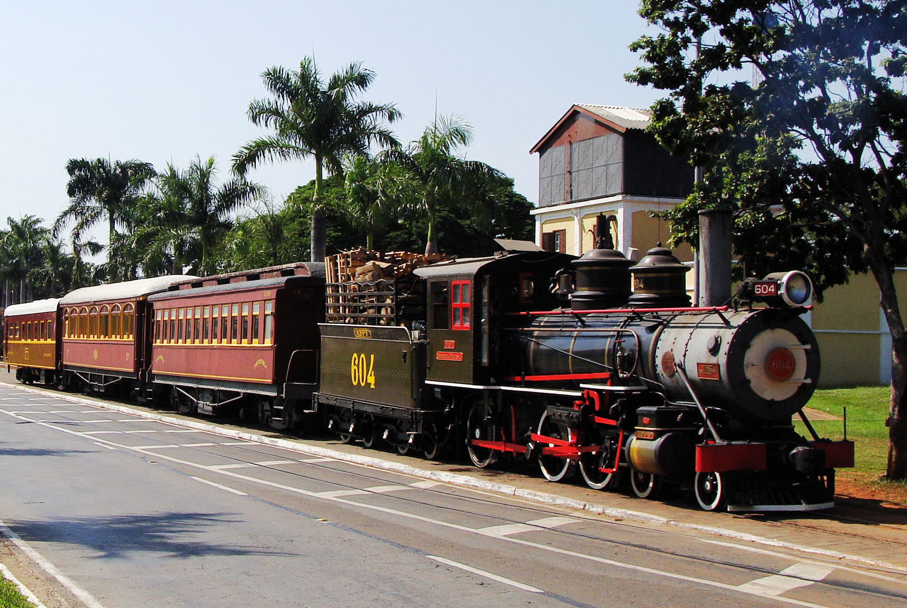

Jaguariúna
A Terra da Música Sertaneja e da Tradição
História
O nome Jaguariúna vem do tupi e significa “Rio da Onça Preta” (îagûara = onça, ‘y = rio, una = preto). A cidade começou a se desenvolver no século XIX, com a chegada da Estrada de Ferro Mogiana, que atraiu moradores e impulsionou a economia local.
Em 1953, Jaguariúna se emancipou de Pedreira e tornou-se município independente. Desde então, a cidade se destacou por sua vocação agrícola, mas também ganhou fama nacional como palco de grandes eventos culturais e musicais.
Pontos turísticos
Jaguariúna mistura o charme histórico do interior paulista com atrações modernas:
• Maria Fumaça – passeio turístico de trem a vapor que liga Jaguariúna a Campinas, preservando a memória ferroviária.
• Parque dos Lagos – área verde com lagos, trilhas e espaço para lazer em família.
• Estação Ferroviária de Jaguariúna – construção histórica, hoje ponto turístico e cultural.
• Fazendas Históricas – algumas abrem para visitação, mostrando a tradição cafeeira da região.
• Red Eventos – centro de shows e eventos que recebe artistas de renome.
Curiosidades
• Jaguariúna é conhecida nacionalmente pelo Rodeio de Jaguariúna, um dos maiores do Brasil, comparado ao de Barretos.
• A cidade já foi cenário de gravações de novelas e programas de TV.
• Recebe milhares de turistas todos os anos para o rodeio, que combina música sertaneja, provas de montaria e atrações culturais.
• Tem uma das maiores festas do interior paulista, que movimenta a economia local.
• Apesar de moderna, preserva o ar tranquilo de cidade do interior.
Cultura e Gastronomia
A cultura de Jaguariúna é marcada pela música sertaneja, festas tradicionais e a herança ferroviária. Além do rodeio, há também festivais de gastronomia, eventos esportivos e apresentações culturais.
Na gastronomia, predominam pratos típicos do interior paulista, como a comida caipira, feijoadas e churrascos, mas a cidade também conta com bares e restaurantes modernos que atendem aos visitantes do rodeio e dos eventos na Red Eventos.
Voltar